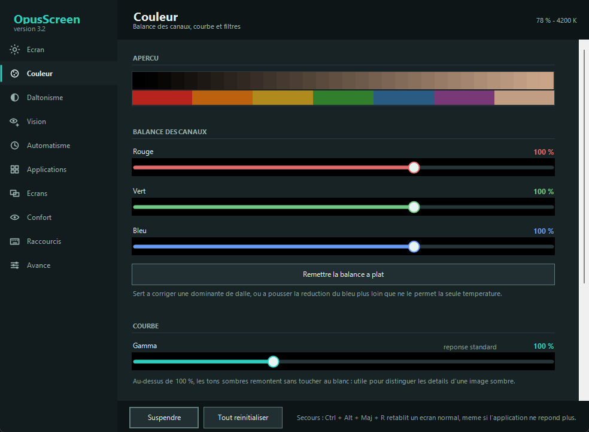

Aucune connexion
L'application ne contacte aucun serveur, ni au lancement ni ensuite. Pas de compte, pas de mise à jour automatique, pas de statistiques d'usage. Un pare-feu n'a rien à bloquer.
Windows · gratuit · code ouvert
Descendez la luminosité plus bas que Windows ne l'autorise, montez-la plus haut, réchauffez les couleurs le soir — et si vous distinguez mal certaines couleurs, laissez un test de deux minutes trouver votre réglage au lieu de le deviner.

Les deux colonnes montrent les mêmes couleurs, vues par la même personne. À gauche, son écran d'aujourd'hui. À droite, le même écran corrigé par OpusScreen. Le calcul est celui de l'application, pas une illustration : mêmes matrices, même écart perçu en Delta E.
Regardez le milieu de chaque bande : à gauche les deux moitiés se fondent, à droite une frontière apparaît.
Écart perçu, paire par paire : —
Écart perçu : —
En dessous de 2,3 Delta E, l'œil humain ne distingue plus deux couleurs ; au-delà, il les distingue. La correction n'invente pas de couleurs : elle écarte celles que vous confondez, sur les canaux que vous percevez encore. La simulation reste une approximation publiée — elle ne remplace pas votre œil, elle donne un point de départ que le test affine.
Le geste quotidien tient sur une page. Les quarante autres réglages attendent qu'on aille les chercher.
Sous 35 %, un voile prend le relais de la table de couleurs : c'est ce qui permet de descendre bien plus bas que le curseur de Windows, sans écraser les noirs. Au-dessus de 100 %, la carte graphique multiplie — l'écran devient lisible en plein soleil, et l'application prévient quand les hautes lumières commencent à s'écrêter.
Vingt modes livrés, et les vôtres, enregistrés d'un clic.

Température de 1 200 à 6 500 K, balance rouge / vert / bleu réglée séparément, saturation de zéro à deux cents pour cent, courbe gamma, contraste.
L'inversion conserve les teintes : le rouge sombre devient rouge clair au lieu de virer au cyan, et une photo reste regardable.

Un test de deux minutes trouve le type et la gravité, puis le réglage s'applique d'un clic. Vous pouvez aussi choisir directement la couleur que vous distinguez mal, et affiner ensuite.
Vos réglages s'enregistrent sous le nom que vous voulez — « cartes », « jeux », « travail » — et ne touchent que les couleurs : jamais votre luminosité.

Un bloc par moniteur. Liez-les tous, décalez-en un de quelques points, ou donnez à chacun son profil complet. Un bouton copie un écran sur les autres, un autre remet tout le monde d'accord.
Le mode « écran éteint » occulte un moniteur sans le déconnecter : les fenêtres qui s'y trouvent restent en place.

La règle 20-20-20, un rappel de clignement qui n'attend aucune réponse et disparaît tout seul, et le temps passé devant l'écran depuis ce matin.
Le rappel s'affiche sans jamais prendre le focus : il ne peut ni interrompre une frappe, ni faire perdre une saisie.
Choisir « deutéranopie, gravité 100 % » dans une liste, c'est se ranger dans une case. Or une correction calibrée sur une déficience complète rend l'écran criard à qui n'en a qu'une partie — et c'est le cas de la plupart des gens concernés.


Ce test ne remplace pas un examen médical. Il règle un logiciel, il ne pose pas de diagnostic : un écran, sa luminosité et son profil de couleur influencent le résultat. Distinguer une protanomalie d'une deutéranomalie légère demande un anomaloscope, et l'application le dit quand le doute existe.
L'application ne contacte aucun serveur, ni au lancement ni ensuite. Pas de compte, pas de mise à jour automatique, pas de statistiques d'usage. Un pare-feu n'a rien à bloquer.
Vos réglages tiennent dans un fichier texte de votre dossier utilisateur, lisible au bloc-notes. Supprimer l'exécutable suffit à désinstaller ; aucun pilote, aucun service, aucune entrée cachée.
Le code est public et documenté en français, sous licence AGPL v3. Vous pouvez le lire, le compiler vous-même en une commande, et vérifier que ce paragraphe dit vrai.
Un logiciel qui touche à la lumière de l'écran peut le rendre inutilisable. Ces garde-fous ne sont pas des intentions : chacun est tenu par un test qui échoue si on le casse.
La température suit l'heure et votre position, calculée hors ligne. Ou vos propres horaires, si le soleil ne vous concerne pas.
La luminosité suit ce qui est affiché : une page blanche n'éblouit plus, une vidéo sombre ne disparaît plus.
Un mode par logiciel au premier plan, et le voile qui s'efface tout seul quand un jeu ou une vidéo passe en plein écran.
Agrandissement plein écran, anneau de couleur franche autour du pointeur, et une étiquette qui nomme la couleur survolée.
Tous reconfigurables, actifs même fenêtre fermée : luminosité, température, mode suivant, correction, pause.
OpusScreen.exe --brightness 60 --temp 3400 — de quoi scripter vos réglages ou les déclencher depuis un autre outil.
Oui, et libre : licence AGPL v3. Pas de version payante, pas de fonctionnalité réservée, pas de période d'essai. Le code entier est public.
Oui. Le fichier n'est pas signé par un certificat commercial — ceux-ci se louent quelques centaines d'euros par an. SmartScreen affiche « Windows a protégé votre ordinateur » : cliquez sur Informations complémentaires puis Exécuter quand même. Si vous préférez ne pas faire confiance à un binaire, le dépôt se compile en une commande, sans rien installer.
La température de couleur est le point commun. Au-delà : la luminosité descend à 5 % et monte à 150 %, chaque écran se règle séparément, et surtout la partie daltonisme — correction réglable et test de mesure — n'existe nulle part ailleurs gratuitement.
Oui. La luminosité, la température et le voile se règlent écran par écran. La saturation et les filtres de couleur, eux, s'appliquent à tout le bureau : c'est une limite de l'interface de Windows, pas un choix — l'application désigne donc explicitement l'écran de référence.
Non, et il le dit. Il règle un logiciel à partir de ce que vous voyez sur cet écran. Un diagnostic demande un examen clinique ; si le test trouve quelque chose d'inattendu, parlez-en à un professionnel plutôt qu'à un logiciel.
Dans un fichier texte, sous %LOCALAPPDATA%\OpusScreen\settings.ini. Il se lit et se modifie au bloc-notes, se sauvegarde par copie, et s'exporte depuis l'onglet Avancé.
Supprimez le fichier. Si vous aviez activé le démarrage automatique, décochez-le d'abord pour retirer l'entrée correspondante.
Windows 7 à 11. L'application s'appuie sur le .NET Framework 4, présent sur toutes ces versions : rien à installer.
Posez-le où vous voulez et double-cliquez. Aucun installateur.